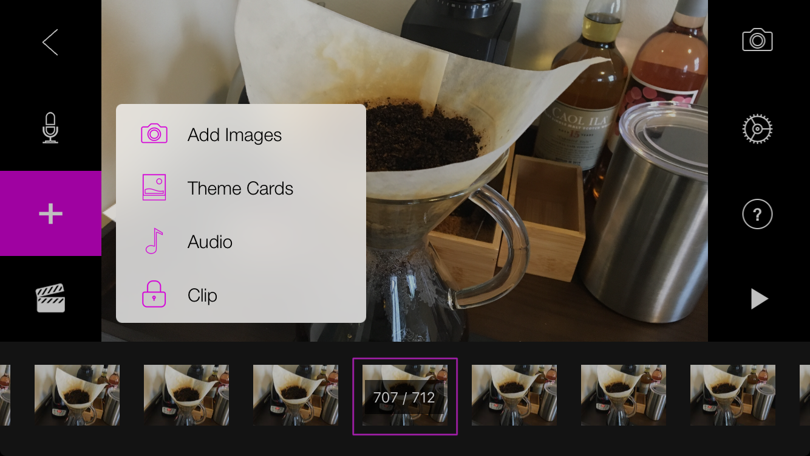

During my first few weeks at DT, I have realized that one of the things that makes me the most creative is proper caffeination. As a creative technologist I think it is important to learn tools outside of web development. In order to learn how to create videos and edit sound tracks, I decided to shoot a stop motion video.
CoffeeMaking from roxanne farkas on Vimeo.
Process
To begin I asked my model go through his normal coffee making routine. I stood next to him and snapped a rapid series of photos to document the process. In order to create the stop motion video, I started with the Stop Motion app.
I next played the video several times, deleting shots where the video was jumpy and adjusting the playback speed. I felt that my video was lacking the emotion I was trying to convey. To address this I chose "Sunday Morning" by Maroon 5. I wanted to make the viewer feel relaxed and enjoy the weekend experience, rather than feel anxious due to the rapid speed of the frames. I imported the movie to iMovie. Next I cut my track on garage band and added it back to iTunes. Finally I used iMovie to set the movie to music. The movie is hosted on Vimeo in order to provide good streaming quality.
Challenges, Constraints, and Criteria
I was exposed to several technologies I had not previously worked with including iMovie and Garageband. It was necessary to learn to cut music in order to make sure that it was the right length for the movie. Learning iMovie is also a skill that I would like to have in order to be able to create more compelling presentations. One of the major constraints of this project was the lack of a stabilizer. It was difficult to create smooth transitions using just an iPhone. The criteria required that I successfully complete the production of a stop motion film. The theme of my 5 in 5 requires that I explore new technologies as often as possible to determine where my passion lies. I really enjoyed creating the video and feel that it communicates the importance of morning coffee to my new daily routine.